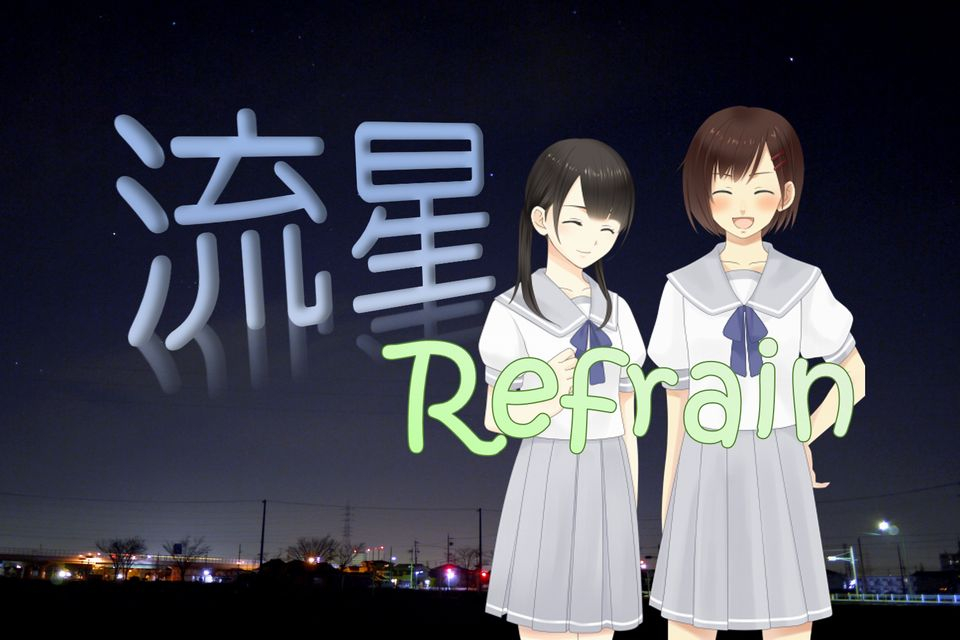

- ★流星Refrain
-
- 
-
- ジャンル：星空ウォッチング系青春ラブコメディ（謎
-
-
変わり映えのない日常。退屈な毎日。
「何か事件でも起きないだろうか？」等と、つい思ってしまう。
そんなある日に生まれた小さな出会いと、
それをきっかけに広がった仲間。
いつしか、かけがえのない存在になっていった。
いつまでも一緒に居たいと思った。
でも……それは永遠じゃなかったんだ。
「……難しいですね、人付き合いって。」
彼女がポツリと呟く。
そんな彼女に……俺は何をしてあげられるんだろう？
-
-
製作 ： Nost/Wind
企画・脚本 ： 栖月 猶弥
音楽・動画 ： ＺＡＮ
スクリプト・演出 ： へるまぐ
キャラクター素材提供 ： とくだ屋 さま
背景素材提供 ： きまぐれアフター さま
背景素材提供 ： KNT graphics さま
効果音素材提供 ： 効果音ラボ さま
★ 以下のサイトで公開中です ★
- ◆ ノベルゲームコレクション
-
・ブラウザゲーム版
・ダウンロード版 （Windowsアプリ）
・ＰＷＡ版 （Android/iPhoneアプリ）
- ◆ Plicy（プリシー）
-
・ブラウザゲーム版